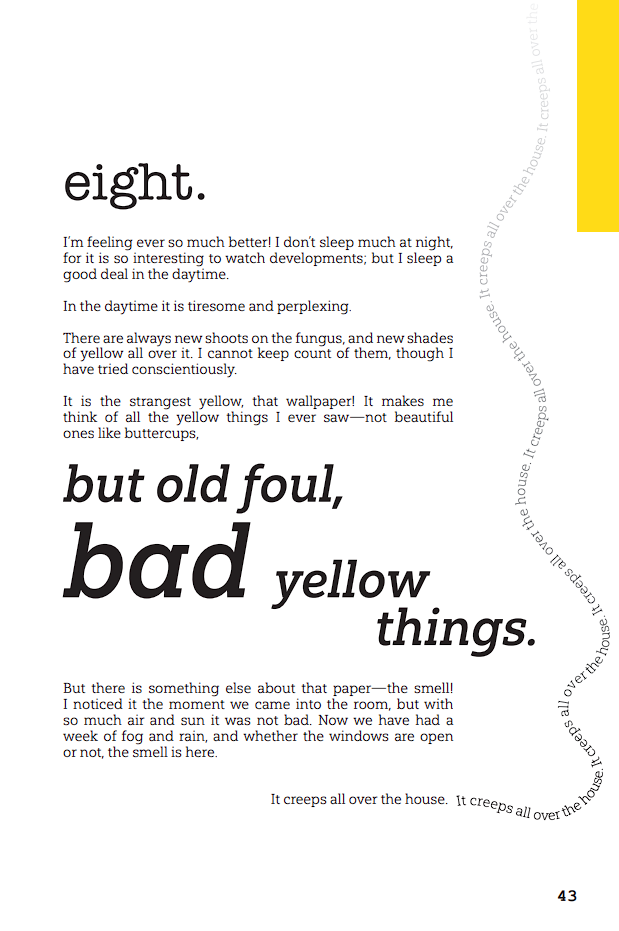

The Yellow Wallpaper
A lesson in typesetting...
This is my most recent project. I was tasked with designing a book using the 1892 short story “The Yellow Wallpaper” by Charlotte Perkins Gilman.



The project revolved around playing with type and creating an interesting reading experience. I wanted to give the story a 21st century makeover so I chose a single striking yellow, black, and white for my color palette and only used clean vector artwork for the drawings inside the book.
The cover's pattern is one of my favorite parts of the project. I created a pattern out of a line drawing of a woman's face and from afar, it looks like a simple floral pattern until you examine it closer and see her. It's a simple yet effective design.